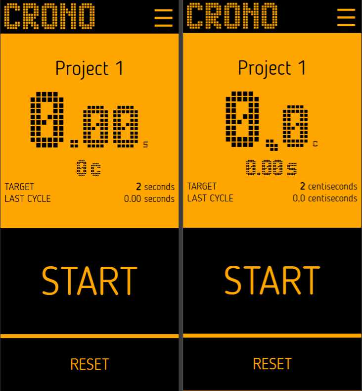

Auto Backup v2
WindowsGestor de copias de seguridad automáticas y manuales, con configuración por proyecto, historial y verificación de archivos ZIP.
Herramientas desarrolladas por Corrosion Labs
Gestor de copias de seguridad automáticas y manuales, con configuración por proyecto, historial y verificación de archivos ZIP.

Cronómetro para medir y registrar tiempos de ciclo en procesos industriales, con objetivos, historial de mediciones, gestión de proyectos y exportación de datos.
Utilidad ligera de copias de seguridad ZIP automáticas y manuales, con retención configurable e instantáneas permanentes.

Aplicación local para descargar, organizar y consultar las exportaciones de datos de ChatGPT, con inventario de conversaciones, proyectos y recursos.
Plugin de indexación de conceptos que genera wikilinks, páginas maestras, referencias cruzadas e índices globales.